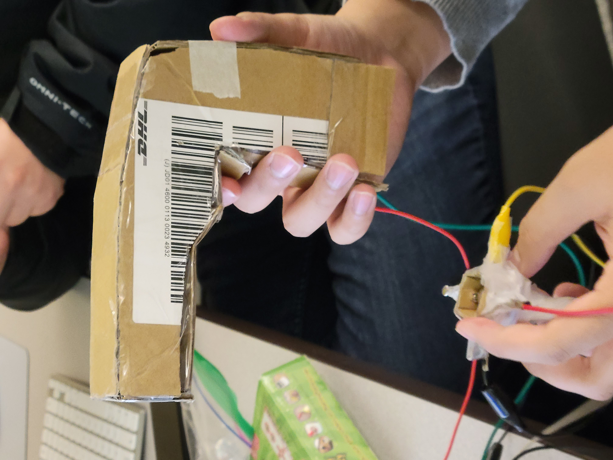
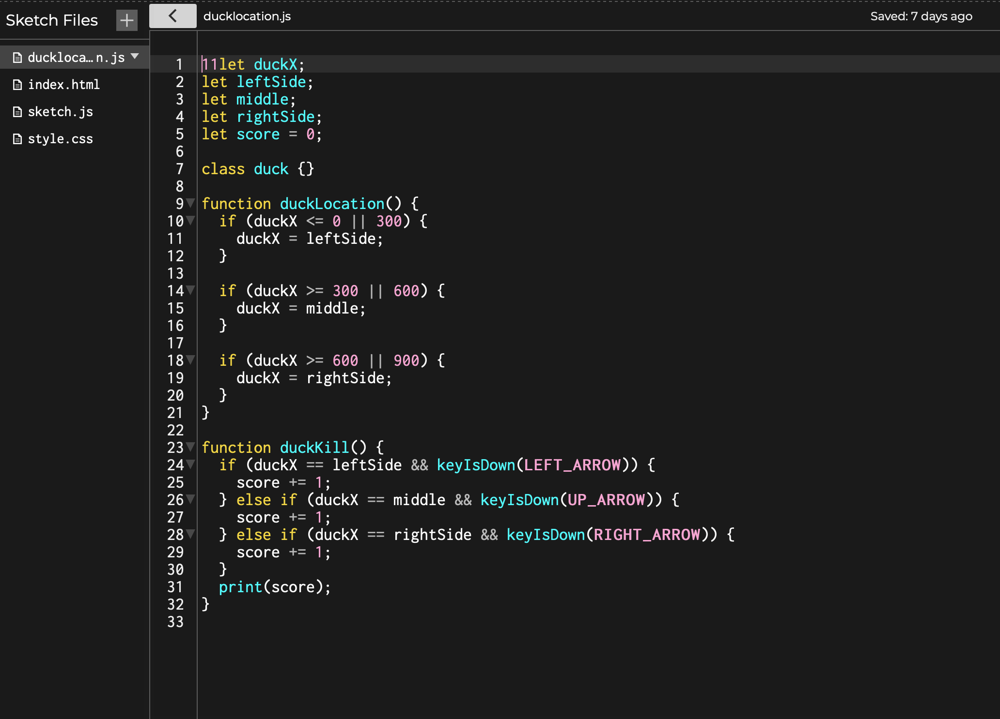
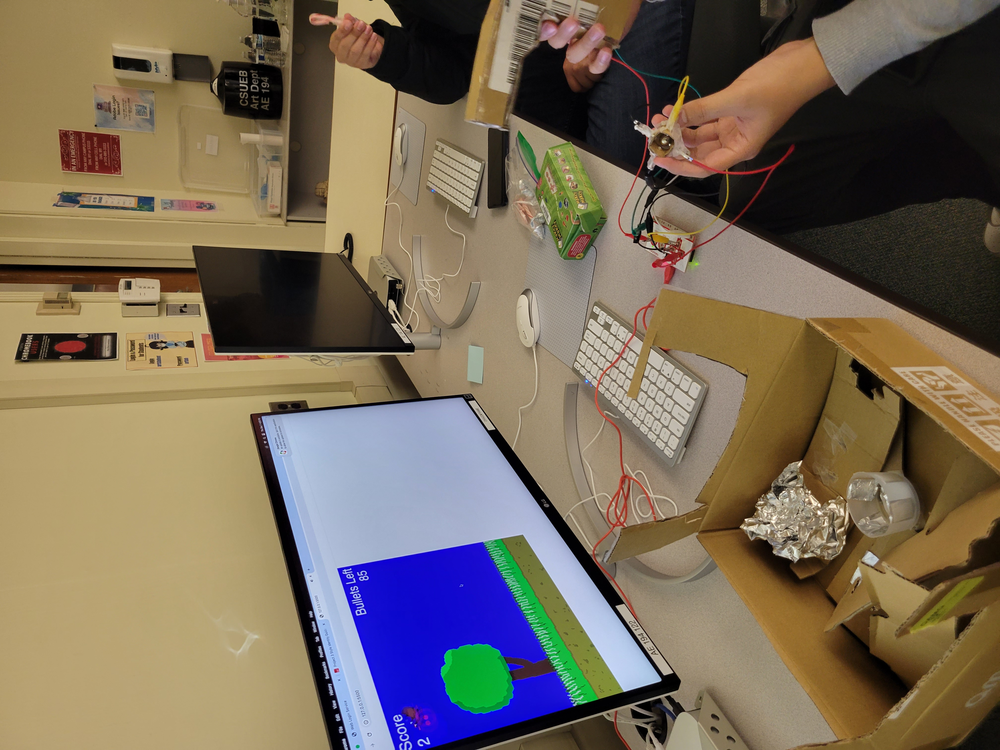

A project by Tommy, Jaekob, and Silvestre
This port of Duck Hunt is adapted for use with a Makey-Makey invention kit instead of a NES controller or Zapper. Nevertheless, the goal of this game is to shoot as many ducks without fail.
Ducks randomly fly across the screen, and you must shoot them down without fail. You start with 150 bullets and the game ends as soon as you exhaust your ammunition. For every duck killed, you gain a few bullets and points. However, the ducks also fly slightly faster.
You can move your crosshairs using the gyroscopic directional pad and shoot using the trigger on the gun.
Many challenges of various sizes and difficulties were faced and overcome in the making of this game. These challenges range from blurry graphics to bugged code. Originally, this game was designed without a crosshair! Instead, players would have to press the arrow keys which at the time corresponded to the left, middle, and right sides of the screen. To kill a duck, a duck would have to be within a specific zone. Players would then have to press the appropriate arrow key to "shoot" within that zone.
Coding it proved to be so much of a challenge that this system was replaced with a crosshair controlled via a gyroscopic directional pad (GDP) for movement and a gun for shooting. The GDP was made using a ball bearing, a liberal amount of tape, and pieces of cardboard. The gun was assembled using cardboard, foil, and tape.
